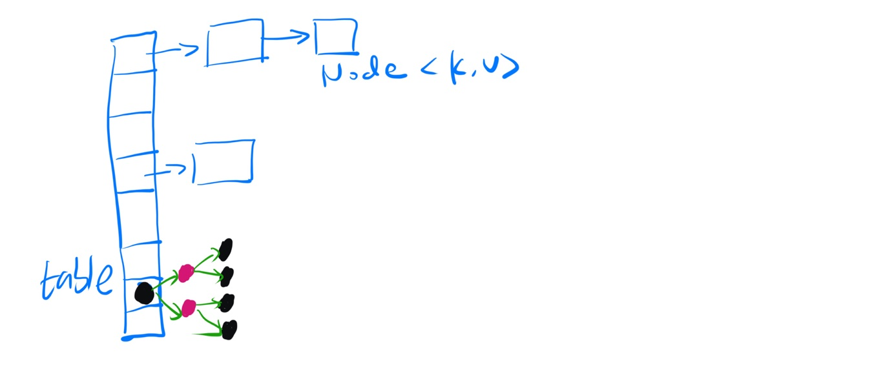

Java中HashMap的实现
1 关于hashcode
一个简单的引用：
1.hashcode是用来查找的， 例如内存中有这样的位置 0 1 2 3 4 5 6 7 而我有个类，这个类有个字段叫ID,我要把这个类存放在以上8个位置之一，如果不用hashcode而任意存放，那么当查找时就需要到这八个位置里挨个去找，或者用二分法一类的算法。 但如果用hashcode那就会使效率提高很多。 我们这个类中有个字段叫ID,那么我们就定义我们的hashcode为ID％8，然后把我们的类存放在取得得余数那个位置。 比如我们的ID为9，9除8的余数为1，那么我们就把该类存在1这个位置，如果ID是13，求得的余数是5，那么我们就把该类放在5这个位置。 这样，以后在查找该类时就可以通过ID除 8求余数直接找到存放的位置了。 2.但是如果两个类有相同的hashcode怎么办那（我们假设上面的类的ID不是唯一的），例如9除以8和17除以8的余数都是1，那么这是不是合法的， 回答是：可以这样。那么如何判断呢？在这个时候就需要定义 equals了。 也就是说，我们先通过 hashcode来判断两个类是否存放某个桶里，但这个桶里可能有很多类，那么我们就需要再通过 equals 来在这个桶里找到我们要的类。 那么。重写了equals()，为什么还要重写hashCode()呢？ 想想，你要在一个桶里找东西，你必须先要找到这个桶啊，你不通过重写hashcode()来找到桶，光重写equals()有什么用啊。
2 继承关系
public class HashMap<K,V> extends AbstractMap<K,V> implements Map<K,V>, Cloneable, Serializable {
3 属性
static final int DEFAULT_INITIAL_CAPACITY = 1 << 4; // aka 16 static final int MAXIMUM_CAPACITY = 1 << 30; static final float DEFAULT_LOAD_FACTOR = 0.75f; static final int TREEIFY_THRESHOLD = 8; static final int UNTREEIFY_THRESHOLD = 6; static final int MIN_TREEIFY_CAPACITY = 64;
4 原理
HashMap由数组和链表组成。
未指定HashMap大小创建的对象，初始大小为 \(2^4\) ，最大容量为 \(2^{30}\) 。

java代码部分为：
/** * The table, initialized on first use, and resized as * necessary. When allocated, length is always a power of two. * (We also tolerate length zero in some operations to allow * bootstrapping mechanics that are currently not needed.) */ transient Node<K,V>[] table; /** * Holds cached entrySet(). Note that AbstractMap fields are used * for keySet() and values(). */ transient Set<Map.Entry<K,V>> entrySet;
不同的hashcode值，落到数组中对应的位置，相同的HashCode的对象组成链表。
当hashmap中的元素大于 \(CAPACITY \ \times\ LOAD\_FACTOR\) 时，数组进行resize。
当链表的长度大于8的时候，链表将会转化为红黑树，来提高查询的效率。
当红黑树元素树小于六个时，则转化为链表。
5 hash
static final int hash(Object key) { int h; return (key == null) ? 0 : (h = key.hashCode()) ^ (h >>> 16); }